무선설비기사 (2015-03-07 기출문제)
1과목: 디지털 전자회로
1. 다음 그림은 정류회로의 입력파형과 출력파형을 나타내었다. 주어진 입출력 특성을 만족시키는 정류회로는? (단, 다이오드의 문턱전압은 0.7[V]이고, 변압기의 권선비는 1:1이라고 가정한다.)
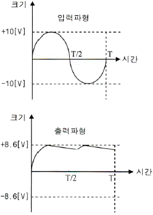
- 반파정류회로
- 유도성 중간탭 전파정류회로
- 2배압 정류회로
- 용량성 필터를 갖는 브리지 전파정류회로
(정답률: 87%)

2. 정류회로 출력 성분 중 교류인 리플을 제거하기 위해 정류회로 다음 단에 접속되는 회로는 무엇인가?
- 평활회로
- 클램핑회로
- 정전압회로
- 클리핑회로
(정답률: 87%)
3. 주어진 그림은 N-채널 FET 소자의 직류전달 특성을 나타내었다. 이 소자의 트랜스컨덕턴스는?
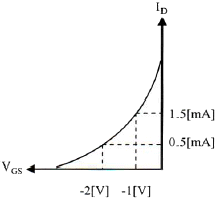
- 1.0[ms]
- 2.0[ms]
- 10[ms]
- 20[ms]
(정답률: 76%)
4. 입력 저항이 20[kΩ]인 증폭기에 직렬 전류 궤환회로를 적용할 경우 입력 저항값은 얼마가 되는가? (단, Aβ=9이다.)
- 0.1[MΩ]
- 0.2[MΩ]
- 0.3[MΩ]
- 0.4[MΩ]
(정답률: 75%)
5. 다음 궤환회로에 대한 설명으로 틀린 것은?
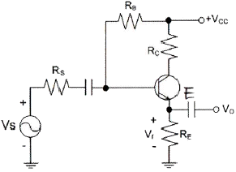
- 궤환으로 입력 임피던스는 감소한다.
- 궤환으로 전체 이득은 감소한다.
- 궤환으로 주파수 일그러짐이 감소한다.
- 궤환으로 출력 임피던스는 감소한다.
(정답률: 64%)
6. 다음 중 전력증폭기에 대한 설명으로 틀린 것은?
- 대신호 동작용으로 사용된다.
- 증폭기의 선형동작에 의해 고조파 왜곡이 생긴다.
- 고출력 증폭을 위해 사용된다.
- 부궤환 회로를 적용하면, 저왜곡 고출력이 가능하다.
(정답률: 60%)
7. 정궤환(Positive Feedback)을 사용하는 발진회로에서 발진을 위한 궤환루프(Feedback Loop)의 조건은?
- 궤환루프의 이득은 없고, 위상천이가 180°이다.
- 궤환루프의 이득은 1보다 작고, 위상천이가 90°이다.
- 궤환루프의 이득은 1이고, 위상천이는 0°이다.
- 궤환루프의 이득은 1보다 크고, 위상천이는 180°이다.
(정답률: 82%)
8. 다음 그림과 같은 발진회로의 명칭은 무엇인가?
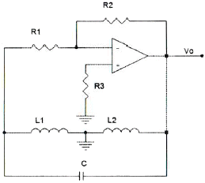
- 콜피츠발진회로
- LC발진회로
- 하틀리발진회로
- 클랩발진회로
(정답률: 86%)
9. 다음 중 정보 전송에서 반송파로 사용되는 정현파의 위상에 정보를 싣는 변조 방식은?
- PSK
- FSK
- PCM
- ASK
(정답률: 83%)
10. FM 변조에서 최대 주파수 편이가 80[kHz]일 때 주파수 변조파의 대역폭은 얼마인가?
- 40[kHz]
- 60[kHz]
- 80[kHz]
- 160[kHz]
(정답률: 88%)
11. RC 충ㆍ방전 회로에서 상승시간(Rise Time)이란 무엇인가?
- 출력전압이 최종값의 90[%]로부터 10[%]에 이르기까지 소요되는 시간
- 스위치를 넣은 후 출력전압이 최종값의 10[%]에서 90[%]까지 소요되는 시간
- 스위치를 넣은 후 출력전압이 최종값의 90[%]에서 100[%]까지 소요되는 시간
- 스위치를 넣은 후 출력전압이 최종값의 10[%]에 이르는데 소요되는 시간
(정답률: 89%)
12. 다음 그림과 같은 단안정 멀티바이브레이터 회로에서 콘덴서 C2의 역할은 무엇인가?
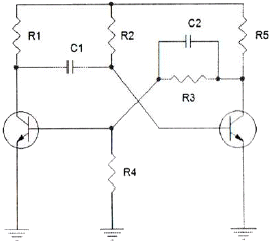
- 스위칭 속도를 빠르게 한다.
- 상태를 저장하는 메모리 기능을 한다.
- 트랜지스터의 베이스 전위를 일정하게 한다.
- 출력 파형의 진폭크기를 결정한다.
(정답률: 70%)
13. 2진법 곱셈 1010×0101의 계산값은?
- 0110010
- 1110001
- 0111001
- 0110001
(정답률: 77%)
14. 10진수 45를 2진수로 변환한 값으로 맞는 것은?
- 101100
- 101101
- 101110
- 101111
(정답률: 86%)
15. 다음 논리 함수
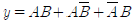
를 간소화한 것으로 옳은 것은?- A+B
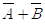
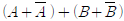
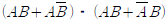
(정답률: 82%)
16. JK-Flip Flop에서 J입력과 K입력이 모두 1이고 CP=1일 때 출력은?
- 출력은 반전한다.
- Set 출력은 1, Reset 출력은 0이다.
- Set 출력은 0, Reset 출력은 1이다.
- 출력은 1이다.
(정답률: 82%)
17. 25진 리플 카운터를 설계할 경우 최소한 몇 개의 플립플롭이 필요한가?
- 4개
- 5개
- 6개
- 7개
(정답률: 90%)
18. 다음 중 리플 카운터(Ripple Counter)에 대한 설명으로 틀린 것은?
- 비동기 카운터이다.
- 카운트 속도가 동기식 카운터에 비해 느리다.
- 최대 동작 주파수에 제한을 받지 않는다.
- 회로 구성이 간단하다.
(정답률: 67%)
19. 여러 개의 회로가 단일 회선을 공동으로 이용하여 신호를 전송하는데 필요한 장치는?
- 멀티플렉서
- 디멀티플렉서
- 인코더
- 디코더
(정답률: 85%)
20. 반가산기(Half Adder)에서 A=1, B=1일 경우 S(Sum)의 값은?
- -1
- 1
- 0
- 2
(정답률: 84%)
2과목: 무선통신 기기
21. 200[W] 전력의 반송파를 사용하여 신호를 변조도 80[%]로 진폭변조하여 전송하고자 할 때 소요되는 총 전력은 약 몇 [W]인가?
- 218[W]
- 264[W]
- 286[W]
- 342[W]
(정답률: 77%)
22. 다음 중 SSB 신호에 대한 설명으로 틀린 것은?
- SSB 신호는 DSB-SC와 같이 동기검파를 수행하여 원래의 변조신호를 얻을 수 있다.
- SSB 신호는 DSB의 두 개 측파를 모두 전송하는 것이 아니고 한쪽만 전송하는 것이므로 신호의 분리에 날카로운 차단 특성을 가진 필터를 사용해야 한다.
- 변조하는 신호에 DC성분이 있는 경우 SSB를 사용할 수 없다.
- SSB 신호는 복조기에서의 주파수 및 위상의 오차에 대한 영향이 DSB에 영향을 미치는 정도와 유사하다.
(정답률: 67%)
23. 페이딩을 방지하기 위하여 동일한 통신정보를 여러 개의 주파수에 실어서 전송하는 다이버시티 방식은 무엇인가?
- 공간 다이버시티
- 편파 다이버시티
- 주파수 다이버시티
- 시간 다이버시티
(정답률: 88%)
24. QAM(Quadrature Amplitude Modulation) 신호는 정보데이터에 의하여 반송파의 무엇을 변경하여 얻는 신호인가?
- 주파수
- 위상
- 진폭
- 위상과 진폭
(정답률: 90%)
25. 이동전화 시스템에서 사용하고 있는 핸드오프(hand-Off) 기능에 대해 맞게 설명한 것은?
- 이동전화단말기와 기지국간의 통화종료를 의미한다.
- 이동전화교환국과 기지국간의 정보전송속도의 변경을 의미한다.
- 이동전화단말기가 통화 중에 이동시 통화채널이 인접기지국에 자동 절환되는 것을 의미한다.
- 발신과 착신의 신호송출 기능을 의미한다.
(정답률: 89%)
26. 다음 중 GPS를 이용하여 위치 측정시 발생하는 오차가 아닌 것은?
- 대류층의 굴절오차
- 위성시계오차
- 온도상승오차
- 다중경로오차
(정답률: 83%)
27. 다음 그림과 같은 다수의 반송파 주파수를 가지고 변조하는 변조방식과 다중화하는 방식을 바르게 짝지은 것은?
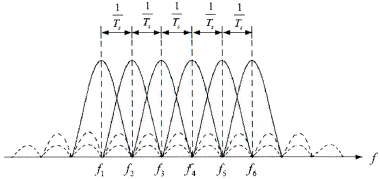
- MFSK - OFDM
- MPSK - OFDM
- MFSK - FDM
- MPSK - TDM
(정답률: 78%)
28. 다음 그림에 나타낸 성상도는 어떤 변조방식에 대한 성상도인가?
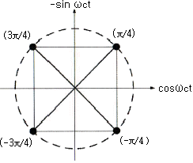
- BPSK
- QPSK
- 8PSK
- 16PSK
(정답률: 82%)
29. 다음 중 레이더(Radar)에 대한 설명으로 옳은 것은?
- 자이로를 이용하여 스스로 위치와 방향을 알 수 있다.
- 방향만 알 수 있고 거리는 파악이 어렵다.
- 펄스를 보내 물체로부터 반사된 펄스가 수신될 때까지의 시간을 측정한다.
- 상대방의 위치와 속도를 알 수 없다.
(정답률: 86%)
30. 다음 중 전파 지연시간을 이용하는 항법장치는?
- VOR(Very high Frequency Omnidirectional Range)
- INS(Inertial Navigation System)
- DME(Distance Measuring Equipment)
- GPS(Global Positioning System)
(정답률: 85%)
31. 다음 중 납 축전지의 구성요소와 재료의 연결이 잘못된 것은?
- 양극판 - 이산화납
- 격리판 - 니켈
- 음극판 - 납
- 전해액 - 묽은황산
(정답률: 71%)
32. 다음 중 충전의 종류가 아닌 것은?
- 속충전
- 저충전
- 균등충전
- 부동충전
(정답률: 81%)
33. 다음 중 전력장치인 수전설비에 해당하지 않는 것은?
- 비교기
- 유입개폐기
- 단로기
- 자동전압 조정기
(정답률: 86%)
34. 다음 중 정전압안정화회로에 대한 설명으로 잘못된 것은?
- 전압안정계수는 낮을수록 좋다.
- 출력저항은 작을수록 유리하다.
- 온도계수는 높을수록 좋다.
- 회로구성에 제너다이오드가 많이 사용된다.
(정답률: 66%)
35. 송신기에 의사공중선 대신 16[Ω]의 무유도 저항을 연결한 후, 측정한 전류값이 5[A]일 경우 송신기의 출력 값은 얼마인가?
- 300[W]
- 400[W]
- 500[W]
- 600[W]
(정답률: 86%)
36. 수신기의 성능을 나타내는 요소 중 충실도에 대한 설명으로 맞는 것은?
- 미약 전파 수신 능력
- 혼신 분리 제거 능력
- 원음 재생 능력
- 장시간 일정출력 유지 능력
(정답률: 86%)
37. 접지저항이 큰 순서로 올바르게 나열한 것은?
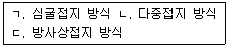
- ㄱ＞ㄴ＞ㄷ
- ㄷ＞ㄱ＞ㄴ
- ㄴ＞ㄱ＞ㄷ
- ㄱ＞ㄷ＞ㄴ
(정답률: 85%)
38. 안테나 실효고 측정방법 중의 하나인 표준 안테나에 의한 방법에서 표준 안테나로 주로 사용되는 안테나는?
- 롬빅 안테나
- 야기 안테나
- 루프 안테나
- 브라운 안테나
(정답률: 81%)
39. 직류 출력전압이 무부하시 220[V]이고 전부하시의 출력전압이 200[V]일 때 전압 변동률은?
- 22[%]
- 20[%]
- 12[%]
- 10[%]
(정답률: 82%)
40. 다음 중 평활회로에 대한 설명으로 틀린 것은?
- 쵸크 입력형 평활회로의 경우 부하전류가 작을수록 맥동률이 크다.
- 콘덴서 입력형 평활회로의 경우 콘덴서 용량이 작을수록 맥동률이 작다.
- 쵸크 입력형 평활회로의 경우 단상반파 및 배전압 정류회로에 주로 적용된다.
- 콘덴서 입력형 평활회로의 경우 부하전류의 최대치와 평균치와의 차가 크다.
(정답률: 80%)
3과목: 안테나 공학
41. 다음 중 TEM파(Transverse Electromagnetic Wave)에 대한 설명으로 옳은 것은?
- 전파 진행방향에 전계성분만 존재하고 자계성분은 존재하지 않는다.
- 전파 진행방향에 자계성분만 존재하고 전계성분은 존재하지 않는다.
- 전파 진행방향에 전계, 자계성분이 모두 존재하지 않는다.
- 전파 진행방향에 전계, 자계성분이 모두 존재한다.
(정답률: 81%)
42. 다음 중 파장이 가장 짧은 주파수 대역은 어느 것인가?
- HF(High Frequency)
- SHF(Super High Frequency)
- EHF(Extremely High Frequency)
- VHF(Very High Frequency)
(정답률: 86%)
43. 비유전율이 9이고 비투자율이 1인 매질을 전파하는 전자파의 속도는 자유공간을 전파할 때와 비교하여 약 몇 배의 속도인가?
- 3.33배
- 2.33배
- 1.33베
- 0.33배
(정답률: 86%)
44. 다음 중 전송효율이 낮고 전송거리가 짧아 일반적으로 매우 낮은 주파수대역이나 전화선 등에 사용하기 적합한 급전선은 무엇인가?
- 도파관식 급전선
- 비동조 급전선
- 동축케이블형 급전선
- 평행이선식 급전선
(정답률: 67%)
45. 부하의 정류화 임피던스가 Zn=1.5+j0인 무손실 급전선의 전압 정재파비는 얼마인가?
- 1.0
- 1.5
- 2.0
- 3.0
(정답률: 81%)
46. 다음 중 안테나 정합회로가 아닌 것은?
- 테이퍼 정합 회로
- Φ형 정합회로
- T형 정합 회로
- Y형 정합회로
(정답률: 85%)
47. 다음 중 도파관에 대한 설명으로 틀린 것은?
- 도파관내의 전파속도에는 위상속도와 군속도가 있다.
- 고역통과 필터의 일종이다.
- 도파관에 전송할 수 있는 파장은 모드에 따라 다르다.
- 주파수가 높을수록 저항손실과 유전체손실이 커진다.
(정답률: 72%)
48. 특성임피던스가 각각 200[Ω]과 800[Ω]인 선로를 λ/4 임피던스 변환기를 이용하여 정합하고자 할 경우 삽입선로의 특성임피던스 값은?
- 600[Ω]
- 500[Ω]
- 400[Ω]
- 300[Ω]
(정답률: 84%)
49. 반치각이란 주엽의 최대 복사 강도(방향)에 대해 몇 [dB]가 되는 두 방향 사이의 각을 말하는가?
- 0[dB]
- -3[dB]
- -6[dB]
- -12[dB]
(정답률: 84%)
50. 다음 중 사용파장이 λ이고 공진파장을 λO라고 할 경우, λ＞λO 조건이라면 최적의 안테나 공진을 위하여 삽입해야 할 것으로 적합한 것은?
- 저항
- 절연체
- 연장코일
- 단축콘덴서
(정답률: 79%)
51. 다음 중 절대이득의 기준 안테나는 무엇인가?
- 무손실 등방성 안테나
- 무손실 반파 다이폴 안테나
- 무손실 혼(Horn) 안테나
- λ/4보다 극히 짧은 수직접지 안테나
(정답률: 79%)
52. 다음 중 안테나 파라미터와 관계없는 것은?
- 편파
- 방사패턴
- 이득
- 반사손실
(정답률: 59%)
53. 다음 중 TV 수신용 광대역 야기 안테나의 종류로 적합하지 않은 것은?
- 슬롯(Slot)형 안테나
- 코니털(Conical)형 안테나
- U라인(U-Line)형 안테나
- 인라인(In-Line)형 안테나
(정답률: 70%)
54. 제1종 접지는 몇 옴[Ω] 이하를 요구하는가?
- 10[Ω]
- 20[Ω]
- 30[Ω]
- 40[Ω]
(정답률: 81%)
55. 마이크로파 대역에서 주로 사용하는 지상파는?
- 지표파
- 직접파
- 대지 반사파
- 회절파
(정답률: 72%)
56. 다음 중 지표파의 대지에 대한 영향으로 틀린 것은?
- 지표파의 전계강도 감쇠가 커지는 순서는 “해상→해안→평야→구릉→산압→시가지”이다.
- 주파수가 낮을수록 멀리 전파된다.
- 대지의 유전율이 클수록 멀리 전파된다.
- 수평편파보다 수직편파 쪽이 감쇠가 작다.
(정답률: 77%)
57. 다음 중 라디오 덕트를 발생시키는 원인으로 볼 수 없는 것은?
- 육상의 건조한 공기가 해상으로 흘러 들어갈 때
- 야간에 지면 쪽의 공기가 상층부의 공기보다 빨리 냉각될 때
- 고기압권에서 발생한 하강기류가 해면으로 내려올 때
- 온난기단이 한랭기단 아래쪽으로 끼어 들어갈 때
(정답률: 83%)
58. 다음 중 페이딩(Fading) 현상에 대한 설명으로 틀린 것은?
- 두 개 이상의 전파가 서로 간섭을 일으켜 진폭 및 위상이 불규칙해지는 현상이다.
- 단시간 내에서 일어나는 전하의 감쇠로 여러 가지 요인에 의해 발생된다.
- 간섭파만 존재할 경우 레일리(Rayleigh) 페이딩으로 모델링한다.
- 전파의 반사, 산란 등으로 인해 전파의 경로가 여러 경로로 흩어지는 것을 간섭성(Interference) 페이딩이라고 한다.
(정답률: 64%)
59. 태양 표면의 폭발로 인하여 20[MHz] 이상의 높은 주파수에서 전파 장해가 심하게 나타나며 위도가 높은 지방일수록 영향이 더 큰 것은 어떤 현상 때문인가?
- 자기 폭풍(Magnetic Storm)
- 델린저 현상(Delinger Phenomenon)
- 코로나 손실(Corona Loss)
- 룩셈부르크 효과(Luxemburg Effect)
(정답률: 84%)
60. 다음 중 자연잡음인 공전 잡음을 효과적으로 방지하기 위한 대책이 아닌 것은?
- 지향성 공중선 사용
- 수신기의 수신대역폭을 넓히고 선택폭을 개선
- 송신 출력을 높여 수신 S/N비를 증대
- 비접지 공중선 사용
(정답률: 79%)
4과목: 무선통신 시스템
61. 디지털 중계 전송에서 재생 펄스의 흔들림 현상을 무엇이라고 하는가?
- Distortion
- Bit error
- Jitter
- Timing
(정답률: 86%)
62. 다음 중 주로 SSB(Single Side Band) 통신방식을 사용하는 기기는 어떤 것인가?
- AM 송신기
- FM 송신기
- PSK 송신기
- FSK 송신기
(정답률: 77%)
63. 이동통신시스템의 다원접속방식 중 다수의 가입자가 하나의 반송파를 공유하여 사용하면서, 시간 축을 여러 개의 시간간격(대역)으로 구분하여 여러 가입자가 자기에게 할당된 시간의 대역을 사용하여 다른 가입자와 겹치지 않도록 하는 다중접속방식은?
- FDMA
- TDMA
- CDMA
- CSMA
(정답률: 83%)
64. 다음 중 이동통신 고속데이터 전송을 위해 사용되는 터보코드에 대해 잘못 설명한 것은?
- 터보코드는 콘볼루션 코드를 병렬형태로 구현한 것으로 성능일 매우 좋은 편이다.
- 별도의 터보 인터리버가 필요하며, 이것은 입력데이터를 랜덤하게 하는 특성이 있어서 좋은 점이 된다.
- 별도의 터보 인터리빙 수행으로 처리 지연시간이 짧아지는 장점이 있다.
- 터보코드는 콘볼루션 코드보다 구현 및 처리면에서 복잡하나 특성면에서는 우수하다.
(정답률: 70%)
65. 다음 중 마이크로파 통신 방식의 일반적인 특성이 아닌 것은?
- 가시거리 통신이며 원거리 통신이 가능하다.
- 광대역 통신이 가능하다.
- 외부 잡음의 영향이 적다.
- 전리층 반사파를 이용하여 전파한다.
(정답률: 68%)
66. 어떤 지역에 200개의 기지국이 시설되어 운용 중에 있다고 가정한다면 1.8[GHz]대의 1FA당 트래픽 수용용량은? (단, 1FA당 트래픽 수용 용량은 2,294이다.)
- 4,129
- 45,850
- 458,800
- 1,032,300
(정답률: 80%)
67. 기지국 전력증폭기에 두 개의 주파수 신호를 입력하였을 경우, 입력신호가 커질수록 제3의 주파수성분이 크게 출력된다면 무엇 때문인가?
- 증폭기 내 열잡음
- 기기 내 간섭 증가
- 회로의 전력 손실
- 증폭기의 비선형성
(정답률: 65%)
68. 다음 중 셀(Cell) 방식 이동통신의 문제점이 아닌 것은?
- 다중경로 페이딩(Multipath Fading)
- 동일채널 간섭(Co-Channel Interference)
- 채널간 간섭(Inter Channel Interference)
- 대류권 산란(Tropospheric Scatter)
(정답률: 80%)
69. FDMA로 구성된 이동통신 시스템에서 총 33[MHz]의 대역이 할당되고, 하나의 쌍방향 이동전화 서비스를 위하여 25[kHz]의 단신 채널 2개를 할당하고 있는 경우, 셀당 동시에 제공할 수 있는 최대 호(Call) 수를 계산하면?
- 330
- 660
- 990
- 1,320
(정답률: 71%)
70. 우리나라 지상파 DMB의 데이터 다중화 기술로 사용되고 있는 방식은?
- CDMA
- CSMA-CD
- OFDM
- TDMA
(정답률: 78%)
71. 다음 중 RFID(Radio Frequency Identification) 기술에 대한 설명으로 틀린 것은?
- 주파수 대역에 따른 인식성능과 응용범위가 다르다.
- 태그(Tag)so 배터리 유무에 따라 액티브 태그 및 패시브 태그로 나눈다.
- 저주파일 경우의 태그 인식속도와 고주파일 경우의 태그 인식속도는 같다.
- 태그 크기는 저주파에서보다 고주파일수록 적은편이다.
(정답률: 77%)
72. 다음 중 무선통신시스템의 통신 프로토콜(Protocol)이 수행하는 임무가 아닌 것은?
- 송신 시스템에서 통신경로를 활성화시키거나 통신하기를 원하는 목표 시스템의 정보를 통신망으로 알려준다.
- 수신 시스템이 데이터를 수신할 준비가 되었는지 송신 시스템이 확인한다.
- 송신 시스템의 파일전달 어플리케이션이 수신 시스템의 파일 관리 프로그램의 특정 사용자 파일 관리를 확인한다.
- 송신 시스템과 수신 시스템 사이의 상호운용성을 확인한다.
(정답률: 51%)
73. 다음 중 OSI(Open System Interconnection) 참조모델의 계층과 프로토콜에 대한 설명으로 적합하지 않은 것은?
- 임의의 계층은 바로 아래 계층의 사용자이다.
- 임의의 계층은 바로 위 계층에게 서비스를 제공한다.
- 프로토콜은 상대 시스템의 피어(Peer) 계층과의 통신에 대한 규약이다.
- 상대 시스템의 피어(Peer) 계층으로 프로토콜 정보를 직접 전달한다.
(정답률: 68%)
74. 다음 중 하위 계층의 기능을 이용하여 종단점간(End-To-End)에 신뢰성 있는 데이터 전송을 수행하기 위해 종단점간의 오류 복원과 흐름 제어를 수행하는 계층은?
- 데이터링크 계층
- 전달 계층
- 네트워크 계층
- 세션 계층
(정답률: 56%)
75. 이동통신 시스템에서 단말기의 전원을 켰을 때 단말기가 가장 먼저 수행하는 일은 무엇인가?
- 위치 등록
- 시스템 동기 획득
- 호출 감시
- 접속 시도
(정답률: 76%)
76. 다음 중 TCP/IP 프로토콜의 네트워크 계층과 관련이 없는 것은?
- DNS
- OSPF
- ICMP
- RIP
(정답률: 71%)
77. 저주파 전력증폭기의 출력측 기본파 전압이 80[V], 제2, 제3고조파 전압이 8[V], 6[V]라면 왜율은 얼마인가?
- 12.5[%]
- 16.5[%]
- 25.0[%]
- 33.0[%]
(정답률: 78%)
78. 다음 중 송신장비의 주파수 안정을 위한 조건으로 맞지 않는 것은?
- 무선국의 송신장치는 실제 야기될 수 있는 충격이 없는 상태를 기준으로 주파수를 허용편차 내로 유지한다.
- 발진회로의 방식은 될 수 있는 한 주위 온도의 영향을 받지 않아야 한다.
- 가능한 한 전원 전압 또는 부하의 변화에 의해 발진 주파수에 영향을 받지 않아야 한다.
- 송신장치의 발진 주파수는 미리 시험하여 결정한다.
(정답률: 64%)
79. 통신망시스템이 고장이 난 시점부터 수리가 완료되는 시점까지의 평균시간을 의미하는 것을 무엇이라 하는가?
- MTTF(Mean Time To Failure)
- MTTR(Mean Time To Repair)
- MTBF(Mean Time Between Failure)
- MTBSI(Mean Time Between System Incident)
(정답률: 81%)
80. 다음 중 WPA(Wi-Fi Protected Access)가 등장하게 된 이유를 맞게 설명한 것은?
- 802.1X 프레임워크의 일부이기 때문이다.
- WEP가 심각하게 취약한 보안성을 지녔기 때문이다.
- 애초부터 IEEE 802.11의 보안 메커니즘이기 때문이다.
- LAN카드에 내장되어 누구나 사용하기 때문이다.
(정답률: 85%)
5과목: 전자계산기 일반 및 무선설비기준
81. 다음 중 1비트(Bit)를 저장할 수 있는 기억장치는?
- Register
- Accumulator
- Filp-Flop
- Delay
(정답률: 75%)
82. 아래 스위칭 회로의 논리식으로 옳은 것은?
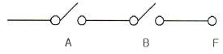
- F = A + B
- F = A ㆍ B
- F = A - B
- F = A / ( B + A )
(정답률: 82%)
83. 2진수 0.111의 2의 보수는 얼마인가?
- 0.001
- 0.010
- 0.011
- 1.001
(정답률: 57%)
84. 프로그램에서 함수들을 호출하였을 때 복귀주소(Return Address)를 보관하는데 사용하는 자료구조는 어느 것인가?
- 스택(Stack)
- 큐(Queue)
- 트리(Tree)
- 그래프(Graph)
(정답률: 80%)
85. 다음 지문에서 설명하고 있는 운영체제의 종류는?
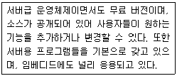
- 유닉스(Unix)
- 리눅스(Linux)
- 윈도우즈(Windows)
- 맥(Mac) O/S
(정답률: 87%)
86. 대기 중인 프로세서가 요청한 자원들이 다른 대기 중인 프로세스에 의해서 점유되어 다시 프로세스 상태를 변경시킬 수 없는 경우가 발생하게 되는데 이러한 상황을 무엇이라 하는가?
- 한계 버퍼 문제
- 교착상태
- 페이지 부재상태
- 스레싱(Thrashing)
(정답률: 80%)
87. 다음 중 컴파일러(Compiler) 언어에 대한 설명으로 틀린 것은?
- 문제중심의 고급언어
- 프로그램 작성과 수정이 용이
- 기계중심의 언어
- 컴퓨터 기종에 관계없이 공통사용
(정답률: 69%)
88. 다음 중 프로그램의 종류에 대한 설명으로 틀린 것은?
- 베타버전이란 개발자가 상용화하기 전에 테스트용으로 배포하는 것을 말한다.
- 쉐어웨어란 기간이나 기능 제한 없이 무료로 사용하는 것을 말한다.
- 데모버전이란 기간이나 기능의 제한을 두고 무료로 사용하는 것을 말한다.
- 테스트버전이란 데모버전 이전에 오류를 찾기 위해 배포하는 것을 말한다.
(정답률: 78%)
89. 다음 중 중앙처리장치에서 사용하고 있는 버스(BUS)의 형태에 속하지 않는 것은?
- Address Bus
- Control Bus
- Data Bus
- System Bus
(정답률: 71%)
90. 다음 지문은 인터럽트 처리과정을 나타낸 것이다. 처리과정의 순서를 올바르게 나열한 것은?
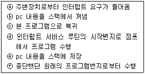
- ⓐ → ⓓ → ⓑ → ⓒ → ⓕ → ⓔ
- ⓐ → ⓔ → ⓓ → ⓑ → ⓒ → ⓕ
- ⓔ → ⓐ → ⓓ → ⓑ → ⓒ → ⓕ
- ⓔ → ⓐ → ⓑ → ⓓ → ⓒ → ⓕ
(정답률: 82%)
91. 주파수허용편차가 100이라면, 500[kHz]를 사용하는 경우 이 무선국의 주파수 허용범위는?
- 499.9[kHz] ~ 500.1[kHz]
- 499.95[kHz] ~ 500.⑤[kHz]
- 499.95[kHz] ~ 501.5[kHz]
- 499.9[kHz] ~ 501.5[kHz]
(정답률: 74%)
92. 다음 중 주파수분배의 고려사항이 아닌 것은?
- 국방ㆍ치안 및 조난구조 등 국가안보ㆍ질서유지 또는 인명안전의 필요성
- 주파수의 이용현황 등 국내의 주파수 이용여건
- 전파를 이용하는 서비스에 대한 수요
- 과거의 주파수 이용 동향
(정답률: 77%)
93. 일반적인 경우 무선통신업무에 종사하는 자는 몇 년마다 1회의 통신 보안교육을 받아야 하는가?
- 2년
- 3년
- 4년
- 5년
(정답률: 80%)
94. 다음 중 전파법의 규정에 의한 적합인증 대상기자재가 아닌 것은?
- 네비텍스수신기
- 무선호출기용 무선설비의 기기
- 주파수공용 무선전화장치
- 영상전송기
(정답률: 73%)
95. 거짓이나 그 밖의 부정한 방법으로 적합성평가를 받은 경우 어떠한 행정처분을 받는가?
- 시정명령
- 개선명령
- 적합성평가의 취소
- 판매중지
(정답률: 86%)
96. 방송통신기자재 지정시험기관의 장이 시험업무를 1월 이상 중지하고자 할 경우 변경신청서를 국립전파연구원장에게 제출하여 승인을 얻어야 한다. 이 경우 최대 중지기간으로 맞는 것은?
- 6개월
- 1년
- 2년
- 3년
(정답률: 73%)
97. 무선설비의 운용을 위한 전원의 전압변동률은 정격전압의 몇 [%] 이내로 유지하여야 하는가?
- ±1[%]
- ±5[%]
- ±10[%]
- ±15[%]
(정답률: 77%)
98. 의료용 전파응용설비에서 전계강도의 최대 허용치는 얼마인가?
- 10미터의 거리에서 50[μV/m] 이하일 것
- 10미터의 거리에서 100[μV/m] 이하일 것
- 30미터의 거리에서 50[μV/m] 이하일 것
- 30미터의 거리에서 100[μV/m] 이하일 것
(정답률: 60%)
99. 무선설비의 안전시설기준에서 정의한 고압전기의 범위로 맞는 것은?
- 550[V]를 초과하는 고주파 및 교류전압과 700[V]를 초과하는 직류전압
- 600[V]를 초과하는 고주파 및 교류전압과 750[V]를 초과하는 직류전압
- 650[V]를 초과하는 고주파 및 교류전압과 800[V]를 초과하는 직류전압
- 700[V]를 초과하는 고주파 및 교류전압과 850[V]를 초과하는 직류전압
(정답률: 85%)
100. 다음 중 감리사의 주요 임무 및 책임사항으로 옳지 않은 것은?
- 감리사는 설계감리 업무를 수행함에 있어 발주자와 계약에 따라 발주자의 설계감독 업무를 수행한다.
- 감리사는 해당 설계용역의 설계용역 계약문서, 설계감리 과업 내용서, 그 밖의 관계 규정 내용을 숙지하고 해당 설계용역의 특수성을 파악한 후 설계감리 업무를 수행하여야 한다.
- 감리사는 설계용역 성과검토를 통한 검토업무를 수행하기 위해 세부 검토사항 및 근거를 포함한 설계감리 검토목록을 작성하여 관리하여야 한다.
- 감리사는 설계자의 의무 및 책임을 면제시킬 수 있으며, 임의로 설계용역의 내용이나 범위를 변경시키거나 기일 연장 등 설계용역 계약조건과 다른 지시나 결정을 하여서는 안 된다.
(정답률: 85%)